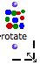

Boxes Graphic Features and Components
This section deals with function boxes and factory boxes[1]. A factory box represents a class of objects in a program, such as notes, sounds, rhythms. A function box refers to a function that is designed to perform an operation upon objects.
Main Layout
All boxes have :
|  |
Inlets and outlets are used for connecting boxes. They are represented by small blue balls and located on the upper and lower parts of the box. Each of them is assigned a specific parameter that characterizes the function[2] or the class[3] the box refers to.
Several functions or factory boxes belonging to a same category of operators often share the same icon. Factory boxes are often characterized by a blue-green background layer. |  Function boxes and factory boxes belonging to the "combinatorial" and "score" categories. |
The name of factory boxes is not displayed by default.
A number of simple functions – such as om+, om-, om/ ... show no name either.
Additional Characteristics
A small label located on the upper left corner of the box can show the possible evaluation[4] mode of a box. Evaluation modes are used for controlling the transmission of resulting data in a program, or for performing specific tasks . |  Boxes on lock mode : computed values can't be changed. |
 | All boxes have an invisible square resizing area in their bottom-right corner. |
Boxes Appearance
The font style and icon size can be globally specified via the OM preferences.
Select the
OM 6.X.X. / Preferences menu.Click on the
Appearancetab and go to the Patches - Boxes section
To change the default size of the boxes icons, select a value in the
Boxes Sizepop up menu.To change the font style of the boxes names, click on
Name Font, and define a style in the font dialogue window.
Press
Applyand/orOKto validate the modifications.Press
Restoreto get back to the OM default preferences.
 The rotate function box, with the default appearance and with new appearance preferences. | New preferences will apply to new items only. Close and reopen your patch windows to see all box resized. |
- Factory Box
A box used for creating an instance, or exemplar, of a given class within a visual program.
- Function
A portion of code within a larger program, which performs a specific task. Operates upon 0 or more parameters and returns a value.
- Class
A category of objects sharing common properties – characteristics and behaviour. A class specifies the internal structure and behaviour of an object. In OM, it is represented in a patch by a factory box that can produce an instance of a class.
See also : Object, Instance
- Evaluation
In Lisp, evaluating an expression amounts to interpreting and reducing its contents in order to return a result.
In OM, visual programs represent Lisp expressions and evaluating a box triggers the calculus that will determine the value of these expressions.
Any kind of box can be evaluated and return something. To evaluate a box, ⤷ Click and press
vorCmdclick on an outlet.